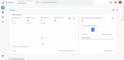

Google Analytics
Source: https://en.wikipedia.org/wiki/Google_Analytics
Category: company__depth2
Depth: 2
Summary
Google Analytics is a web analytics service offered by Google that tracks and reports website traffic and mobile app traffic and events, currently as a platform inside the Google Marketing Platform brand. Google launched the service in November 2005 after acquiring Urchin.
Images

Full Article
Web analytics service from Google
Google Analytics is a web analytics service offered by Google that tracks and reports website traffic and mobile app traffic and events, currently as a platform inside the Google Marketing Platform brand. Google launched the service in November 2005 after acquiring Urchin.
As of 2019, Google Analytics is the most widely used web analytics service on the web. Google Analytics provides an SDK that allows gathering usage data from iOS and Android apps, known as Google Analytics for Mobile Apps.
Google Analytics has undergone many updates since its inception and is currently on its 4th iteration—GA4. GA4 is the default Google Analytics installation and is the renamed version for the (App + Web) Property that Google released in 2019 in a Beta form. GA4 has also replaced Universal Analytics (UA). One notable feature of GA4 is a natural integration with Google's BigQuery—a feature previously only available with the enterprise GA 360. This move indicates efforts by Google to integrate GA and its free users into their wider cloud offering.
As of July 1, 2023, Universal Analytics ceased collecting new data, with Google Analytics 4 succeeding it as the primary analytics platform. Google had previously announced this change in March 2022. While users had the ability to use Universal Analytics up to the July 2023 deadline, no new data has been added to UA since its sunset. On July 1, 2024, all users, including GA 360, will lose access to all Universal Analytics properties.
Features
Google Analytics is used to track website activity such as session duration, pages per session and the engagement rate of individuals using the site, along with the information on the source of the traffic. It can be integrated with Google Ads, with which users can create and review online campaigns by tracking landing page quality and conversions (key events). Goals might include sales, lead generation, viewing a specific page, or downloading a particular file. Google Analytics' approach is to show high-level, dashboard-type data for the casual user, and more in-depth data further into the report set. Google Analytics analysis can identify poorly performing pages with techniques such as funnel visualization, where visitors came from (referrers), how long they stayed on the website and their geographical position. It also provides more advanced features, including custom visitor segmentation. Google Analytics e-commerce reporting can track sales activity and performance. The e-commerce reports show a site's transactions, revenue, and many other commerce-related metrics.
On September 29, 2011, Google Analytics launched Real-Time analytics, enabling a user to have insights about visitors currently on the site. A user can have 100 site profiles. Each profile generally corresponds to one website. It is limited to sites that have online traffic of fewer than 5 million page views per month (roughly 2 page-views per second) unless the site is linked to a Google Ads campaign. Google Analytics includes Google Website Optimizer, re-branded as Google Analytics Content Experiments. Google Analytics' Cohort analysis helps in understanding the behavior of component groups of users apart from your user population. It is beneficial to marketers and analysts for the successful implementation of a marketing strategy.
The latest version of Google Analytics, commonly referred as GA4, encompasses additional features focusing on predictions, customizability, and privacy. Some of these features can be listed as:
- A new concept to allow the same property to be used both for website and mobile app,
- AI-powered predictive metrics supported by machine learning,
- A customizable, easy-to-navigate homepage,
- An Explore section to provide completely custom reports for specific business needs,
- A built-in DebugView to analyze and debug the upcoming data instantly,
- Anomaly detection,
- Improved e-commerce reports.
- Has feature to analysis user journey from behavior analysis section.
History
Google acquired Urchin Software Corp. in April 2005. Google's service was developed from Urchin on Demand. The system also brings ideas from Adaptive Path, whose product, Measure Map, was acquired and used in the redesign of Google Analytics in 2006. Google continued to sell the standalone, installable Urchin WebAnalytics Software through a network of value-added resellers until discontinuation on March 28, 2012. The Google-branded version was rolled out in November 2005 to anyone who wished to sign up. However, due to extremely high demand for the service, new sign-ups were suspended a week later. As capacity was added to the system, Google began using a lottery-type invitation-code model. Before August 2006, Google was sending out batches of invitation codes as server availability permitted; since mid-August 2006 the service has been fully available to all users – whether they use Google for advertising or not.
The newer version of Google Analytics tracking code is known as the asynchronous tracking code, which Google claims is more sensitive and accurate, and is able to track very short activities on the website. The previous version delayed page loading, and so, for performance reasons, it was generally placed just before the </body> body close HTML tag. The new code can be placed between the <head> ... </head> HTML head tags because, once triggered, it runs in parallel with page loading. In April 2011 Google announced the availability of a new version of Google Analytics featuring multiple dashboards, more custom report options, and a new interface design. This version was later updated with some other features such as real-time analytics and goal flow charts. Instead of being "hit-based," like Universal Analytics, GA4 is "event-based."
In October 2012 another new version of Google Analytics was announced, called Universal Analytics. The key differences from the previous versions were: cross-platform tracking, flexible tracking code to collect data from any device, and the introduction of custom dimensions and custom metrics.
In March 2016, Google released Google Analytics 360, which is a software suite that provides analytics on return on investment and other marketing indicators. Google Analytics 360 includes seven main products: Analytics, Tag Manager, Optimize, Data Studio, Surveys, Attribution, and Audience Center.
In October 2017 a new methodology to collect data for Google Analytics was announced, called Global Site Tag, or gTag.js. Its stated purpose was to unify the tagging system to simplify implementation. This new tag type is an alternative to the existing Analytics.js tag type or Google Tag Manager.
In June 2018, Google introduced Google Marketing Platform, an online advertisement and analytics brand. It consists of two former brands of Google, DoubleClick Digital Marketing and Google Analytics 360.
In October 2020, Google released Google Analytics 4, under the acronym GA4.
As of July 1, 2023, Universal Analytics ceased collecting new data, with Google Analytics 4 succeeding it as the primary analytics platform. Google had previously announced this transition in March 2022. While users had the option to use Universal Analytics up to the July 2023 deadline, no new data has been added to UA since its discontinuation.
July 1, 2024: Standard Universal Analytics properties completely stopped processing data and users lost access to the interface and API. There is a one-time exception for Google Analytics 360 customers, whose access ends on that date as well.
Technology
| icon | This section needs additional citations for verification. Please help improve this article by adding citations to reliable sources in this section. Unsourced material may be challenged and removed. (November 2007) (Learn how and when to remove this message) |
{kind=link}
Google Analytics is implemented with "page tags", in this case, called the Google Analytics Tracking Code, which is a snippet of JavaScript code that the website owner adds to every page of the website. The tracking code runs in the client browser when the client browses the page (if JavaScript is enabled in the browser) and collects visitor data and sends it to a Google data collection server as part of a request for a web beacon.
The tracking code loads a larger JavaScript file from the Google web server and then sets variables with the user's account number. The larger file (currently known as ga.js) was typically 40 kb as of May 2018.
The file does not usually have to be loaded, however, due to browser caching. Assuming caching is enabled in the browser, it downloads ga.js only once at the start of the visit.
In addition to transmitting information to a Google server, the tracking code sets a first party cookie (If cookies are enabled in the browser) on each visitor's computer. This cookie stores anonymous information called the ClientId. Before the launch of Universal Analytics, there were several cookies storing information such as whether the visitor had been to the site before (new or returning visitor), the timestamp of the current visit, and the referrer site or campaign that directed the visitor to the page (e.g., search engine, keywords, banner, or email).
If the visitor arrived at the site by clicking on a link tagged with UTM parameters (Urchin Tracking Module) such as:
https://www.example.com/page?utm_content=buffercf3b2&utm_medium=social&utm_source=facebook.com&utm_campaign=buffer
then the tag values are passed to the database too.
Limitations
In addition, Google Analytics for Mobile Package allows Google Analytics to be applied to mobile websites. The Mobile Package contains server-side tracking codes that use PHP, JavaServer Pages, ASP.NET, or Perl for its server-side language. However, many ad filtering programs and extensions such as Firefox's Enhanced Tracking Protection, the browser extension NoScript and the mobile phone app Disconnect Mobile can block the Google Analytics Tracking Code. This prevents some traffic and users from being tracked and leads to holes in the collected data. Also, privacy networks like Tor will mask the user's actual location and present inaccurate geographical data. A small fraction of users do not have JavaScript-enabled/capable browsers or turn this feature off. These limitations, mainly ad filtering programs, can allow a significant number—sometimes the majority—of visitors to avoid the tracker.
One potential impact on data accuracy comes from users deleting or blocking Google Analytics cookies. Without cookies being set, Google Analytics cannot collect data. Any individual web user can block or delete cookies resulting in the data loss of those visits for Google Analytics users. Website owners can encourage users not to disable cookies by, for example, making visitors more comfortable using the site through posting a privacy policy. As a user navigates between web pages, Google Analytics provides website owners JavaScript tags (libraries) to record information about the page a user has seen, for example the URL of the page. Google analytics JavaScript libraries uses HTTP cookies, with which it remembers what a user has done on previous pages and his interactions.
Another limitation of Google Analytics for large websites is the use of sampling in the generation of many of its reports. To reduce the load on their servers and to provide users with a relatively quick response to their query, Google Analytics limits reports to 500,000 randomly sampled sessions at the profile level for its calculations. While margins of error are indicated for the visits metric, margins of error are not provided for any other metrics in the Google Analytics reports. For small segments of data, the margin of error can be very large.
One of the biggest limitation of Google Analytics, is its inability to track and attribute offline conversions. Offline conversion tracking is required to measure the impact of online marketing campaigns in "offline" environments, such as Point of Sale, Call Centers, Affiliate Networks, or payment gateways. Since Google Analytics is a JavaScript tag set on a website, when the visitor switch from the website environment to a phone conversation, the tracking is lost, and the "call center" activity can not be directly linked to the initial visit or visitor. Third-party tools integrated with Google Analytics, are now capable of tracking customer journey from online to offline environments.
The retention period for user-level data and for event data used in Explorations is limited to 2 months by default and can be extended to a maximum of 14 months in the standard product. The retention setting does not affect standard aggregated reports in GA4. Google Analytics 360 offers longer options, up to 50 months.
Performance
There have been several online discussions about the impact of Google Analytics on site performance. However, Google introduced asynchronous JavaScript code in December 2009 to reduce the risk of slowing the loading of pages tagged with the ga.js script.
Privacy
Main articles: Browser security and Privacy concerns regarding Google
Due to its ubiquity, Google Analytics raises some privacy concerns. Whenever someone visits a website that uses Google Analytics, Google tracks that visit via the user's IP address in order to determine the user's approximate geographic location. To meet German legal requirements, Google Analytics can anonymize the IP address. Google has also released a browser plug-in that turns off data about a page visit being sent to Google, however, this browser extension is not available for mobile browsers. Since this plug-in is produced and distributed by Google itself, it has met much discussion and criticism. Furthermore, the realization of Google scripts tracking user behavior has spawned the production of multiple, often open-source, browser plug-ins to reject tracking cookies. These plug-ins allow users to block Google Analytics and similar sites from tracking their activities. Many browsers allow users to reject third-party cookies and tracking scripts, in some cases this is the default option.
It has been anecdotally reported that errors can occur behind proxy servers and multiple firewalls, changing timestamps and registering invalid searches. Webmasters who seek to mitigate Google Analytics' specific privacy issues can employ a number of alternatives having their backends hosted on their own machines. Until its discontinuation, an example of such a product was Urchin WebAnalytics Software from Google itself. On January 20, 2015, the Associated Press reported that HealthCare.gov was providing access to enrollees' personal data to private companies that specialized in advertising, mentioning Google Analytics specifically. Additionally, in 2022, countries such as Austria, France, and Italy have prohibited the service which lets webmaster tools track and analyze their site traffic. The government stated in its decisions that information are collected via cookies and transmitted to the United States could potentially be seen by third parties and the government which could breach GDPR as users are not ensured due process for redress.
The new version of Google Analytics, also known as GA4, is equipped with deeper anonymization of user data through which the GA4 anonymizes IP addresses of all users by default, meaning it's not possible to perform any changes for this setting.
Support and training
Google offers training for Google Analytics 4 (GA4) through its Skillshop platform, which includes four courses and a certification as of August 2024. For developers and those seeking in-depth technical details, Google provides detailed GA4 documentation. Announcements related to updates and new features for GA4 are made on the Google Marketing Platform Blog. Support for enterprise-level users is accessible via the Google Enterprise Marketing Portal. The official Google Analytics YouTube channel also hosts a range of video tutorials and insights.
Third-party support
The Google Analytics API is used by third parties to build custom applications such as reporting tools. Many such applications exist. One was built to run on iOS (Apple) devices and is featured in Apple's app store. There are some third-party products that also provide Google Analytics-based tracking. The Management API, Core Reporting API, MCF Reporting API, and Real Time Reporting API are subject to limits and quotas.
Popularity
Google Analytics is the most widely used website statistics service. In May 2008, Pingdom released a survey stating that 161 of the 500 (32%) biggest sites globally according to their Alexa rank were using Google Analytics.
A later piece of market share analysis claimed that Google Analytics was used by around 49.95% of the top 1,000,000 websites (as ranked in 2010 by Alexa Internet).
In 2012, its use was around 55% of the 10,000 most popular websites. And as of April 2022, Google Analytics was used by 73.7% of the 10,000 most popular websites ordered by popularity, as reported by BuiltWith.
As of August 2023, the newer version, Google Analytics 4 (GA4), is used by approximately 13.5 million websites.
Website builders such as Wix, Squarespace, Readymag and Webflow offer integration with Google Analytics, either by directly entering a tracking ID or by using Google Tag Manager. On Wix, users can connect Google Analytics through the site's dashboard or embed it using Tag Manager. Squarespace allows users to install Google Tag Manager to manage Analytics and other tags. Redyamg allows it for projects with custom domains thru enhanced measurement feature. Similarly, Webflow users can implement Google Analytics by configuring Tag Manager in their project settings.
See also
- Google Search Console – Web service from Google for webmasters
- Google Trends – Popularity analysis of search queries
- List of web analytics software
References
External links
- Official website
- Official blog
- Google marketing platform
- Google analytics help
- Google Analytics Academy
| - v - t - e Google Ads | ||
|---|---|---|
| Web | - Google Ad Manager - Google AdSense - Google Marketing Platform | Google Ads marker |
| Mobile | - AdMob - Adscape | |
| Other | - DoubleClick - Google Analytics - Google Contributor |
{kind=link}
| Authority control databases Edit this at Wikidata | |
|---|---|
| International | - GND |
| National | - Czech Republic |